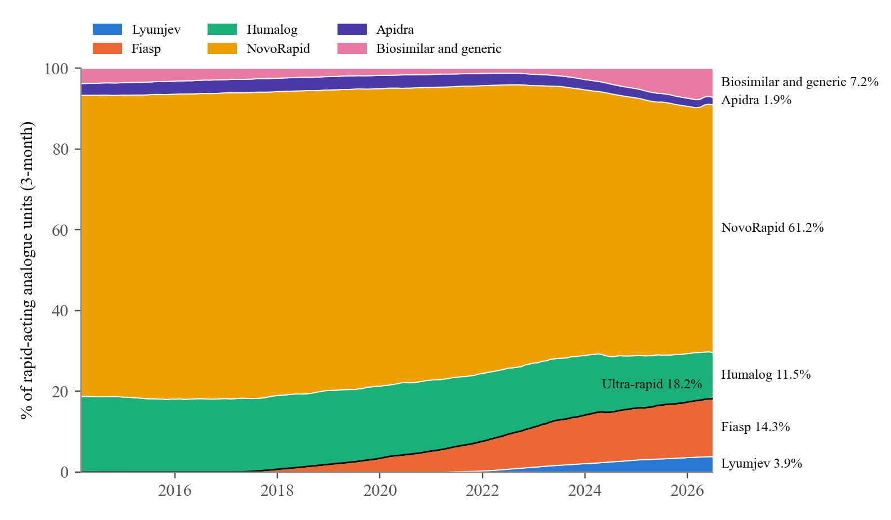
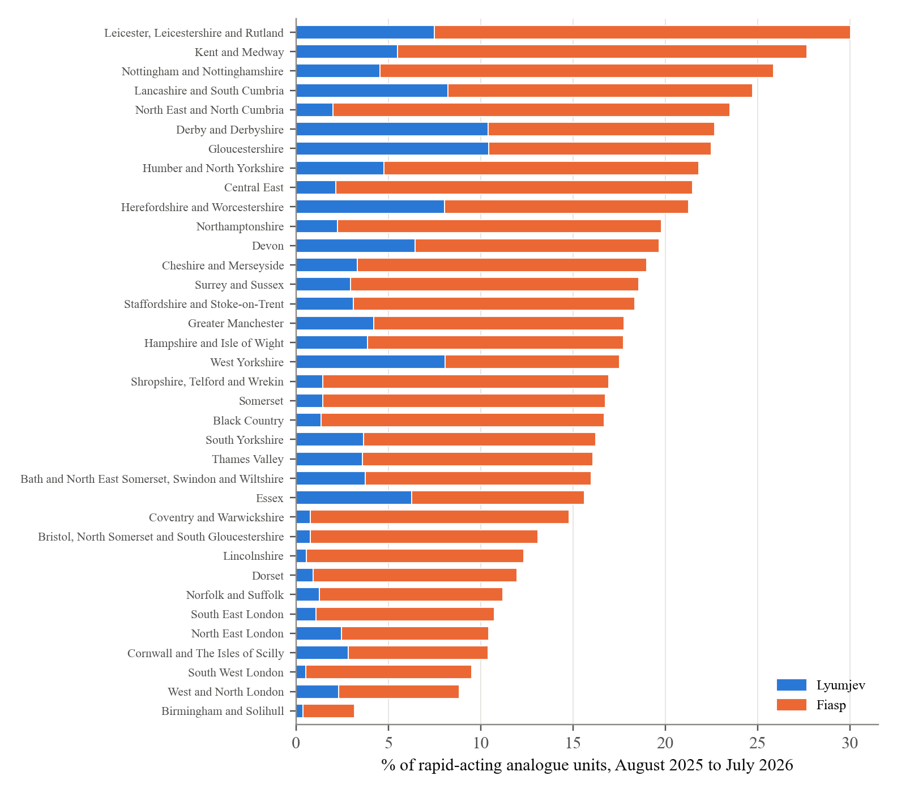
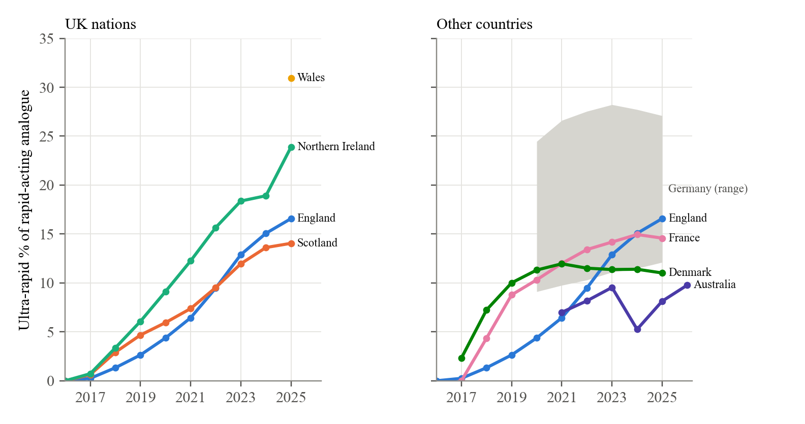

Tim Street | Diabettech | October 2026
The usual preamble. This is analysis of published prescribing data, published trials and public statements, not advice about which insulin anyone should use. The method, every number and the code that produces them are in the repository linked at the end, and the sources are listed there too.
As MiniMed, Insulet, Tandem and CamDiab work to bring fully closed loop, a system that needs no meal boluses at all, into wider use, the system that decides which insulins people are offered has conspired to take away a key part of that equation: the fastest subcutaneous insulin available. This is a story of inertia, ineptitude and indifference.
In March 2026 a pump user in Switzerland went to order more Lyumjev and was told it could not be ordered. "There's no press release, pharmacy just says they can't order it anymore due to being discontinued," they wrote on Reddit. Lilly had told Swiss specialists the previous autumn. It had not told the national patient organisation, which found out from a copy passed to it unofficially.
Switzerland was the first. In March 2026 Lilly announced that it would stop selling selected presentations of its insulins in selected European countries before 2027, and Lyumjev, its ultra rapid insulin lispro, is on the list. The formal reason is "commercial". The reason given closer to the ground is that not many people used it.
That is true, and it is the subject of this piece. Lyumjev was not used much because the system that decides which insulins people are offered did not offer it, including in the years when it cost the NHS nothing extra to do so. People with diabetes are now losing an insulin on the grounds of low demand that prescribers, formulary committees and guideline writers created.
I should say where I stand. I have used the fastest subcutaneous mealtime insulin available since each one reached the UK, some of the time on private prescription, because I read the pharmacology and the trials and decided that an insulin which starts working sooner was worth having. I built Boost, the open-source automated insulin delivery algorithm I develop, around the pharmacology of Lyumjev, and with it my own time in range (3.9 to 10 mmol/L) was about 83% between 1 April and 31 August 2026, without announcing meals or bolusing for them. That is one person using experimental software. It is also the kind of result fully closed loop is aiming for, and it depends on the insulin.
Neither Lyumjev nor Fiasp, Novo Nordisk's faster aspart, has lost its EU licence. Their presentations are going country by country. Lyumjev cartridges have gone in France and Belgium, its 200 unit and Junior KwikPens in Norway, and its vial, cartridges and standard KwikPen in Switzerland. Germany has kept Lyumjev but dropped its five-pen packs. The Lyumjev Tempo Pen was removed from the EU licence in July 2026. On the Novo Nordisk side, the Fiasp PumpCart, a prefilled cartridge for the YpsoPump, is being withdrawn across the whole EU by the end of 2026.
The official statements are brief. The European Medicines Agency says Lilly "decided to stop marketing some of its insulin medicines for commercial reasons", and that the decision "is not related to a quality defect or safety issue". Lilly's template letter to European clinicians says the decision followed "careful consideration and a thorough market assessment". In France, Lilly said it was rationalising its insulin range worldwide to "maintain a continuous and reliable supply of the insulins most commonly used by patients".
Lower down, the reason becomes specific. Norway's diabetes association, reporting the loss of the two Lyumjev pens there, wrote that Lilly "points out that these are variants that are little used". In Switzerland, the patient organisation diabetesschweiz complained, and in March 2026 passed on what it had been told, which it was careful to call unofficial: that very few people in Switzerland had stayed on Lyumjev long term, partly because of pain or burning at injection, and that specialist prescribing had been very low.
The UK has had no announcement. The NHS medicines dictionary marks only the Lyumjev Tempo Pen as discontinued, and Lilly's March notice covers the EU and EEA. But the UK uses Lyumjev at the same low rate as France, which has already lost the cartridges, and Lilly has not said what it plans here.
Every rapid-acting insulin has the same problem. Food starts raising glucose within minutes, and an injected insulin takes a good deal longer to get going. That is why we are told to inject 15 to 20 minutes before eating, and why so many post-meal spikes look the way they do. In practice most people do not wait. A Spanish study using connected pen caps recorded 775 evenings from 49 people, and in 52.6% of them the dinner insulin went in during the 45 minutes after the glucose rise from the meal had already started.
The ultra-rapid insulins change the first half hour. Fiasp appears in the blood about five minutes earlier than NovoRapid. Lyumjev adds citrate and treprostinil to lispro, which open up the local blood vessels, and has several times Humalog's exposure in the first quarter of an hour. In the trials' meal tests, the rise in glucose an hour after eating was about 0.9 to 1.6 mmol/L lower than with the older insulins.
Lyumjev is the faster of the two, and people who have used both say so. In a crossover study of all four insulins, Lyumjev reached half its early peak concentration six minutes before Fiasp. In the Cambridge closed-loop system, Fiasp added no time in range over standard aspart, while Lyumjev added 2.5 percentage points over standard lispro, and a pooled analysis of meals in that system found Lyumjev improved the four hours after breakfast where Fiasp made no measurable difference.
What people value is not having to wait. "Lyumjev is faster for me, I don't pre-bolus now and I just feel much more confident with it," wrote a Diabetes UK forum member in 2021. A Swiss pump user wrote in 2026 that "Lyumjev worked extremely well with Control-IQ because of the faster pharmacokinetics. It noticeably improved post-meal spikes compared with standard lispro."
It does not suit everyone. Site pain is the common complaint, especially on pumps. In the Lyumjev pump trial, infusion-site reactions occurred in 19.1% of people against 6.9% on Humalog, and of 29 people whose earlier public accounts I collected, nine described pain or site reactions, seven of them with Lyumjev. "Burning, painful infusion sites that left lumps several days after," one t:slim user wrote in March 2026. That is a reason to offer a choice: Lyumjev suits some people and hurts others.
England publishes every prescription dispensed in the community. In the year to July 2026, Lyumjev was 3.7% of the rapid-acting analogue insulin dispensed in English primary care, six years after it arrived. Its share of lispro has grown every year, to 24% in 2026, but most people in England use aspart, and Lyumjev is a lispro. Fiasp, faster aspart, adds 13.9%, so the two ultra-rapid insulins together are 17.5%. The other 82.5%, or 2.74 million prescription items a year, is one of the older, slower products.

Where people live decides a great deal. Between English integrated care boards the ultra-rapid share ranges from 3.2% in Birmingham and Solihull to 30.0% in Leicester, Leicestershire and Rutland. Across the UK nations it is 14.7% in Scotland, 17.4% in England, 26.4% in Northern Ireland and 32.8% in Wales, and in one Welsh health board, Cwm Taf Morgannwg, it is 56.3%. Lyumjev alone is 6.0% of units in both Wales and Northern Ireland, against 3.7% in England and 3.4% in Scotland.

England is not unusual internationally. France was at 14.3% in the year to June 2026 and Denmark at 11.0% in 2025; both rose faster than England at first and then stopped at around 11% to 15%. The spread inside the UK is wider than the spread between countries, which is the first sign that the low figure is a choice made locally.

Every head-to-head trial of Fiasp or Lyumjev against its parent insulin used HbA1c as its main outcome and tested whether the new insulin was no worse. They all passed. Pooled across nine trials, the difference in HbA1c was 0.02 percentage points. The post-meal benefit was there, but as a secondary result.
That design is enough to license an insulin and gives prescribers little reason to use it. HbA1c is what guidance, audits and incentive schemes look at, and "no different on HbA1c" gives a busy clinician no prompt to switch anyone. NICE's guidance for adults with type 1 diabetes recommends rapid-acting analogues as a class, names no product, and has not been reviewed on this point since 2015. At no point did national guidance tell prescribers that the faster insulins were worth offering.
Each area has a formulary that sets which insulins are first choice. I read the entries for Lyumjev in 38 areas across the UK: 17 English integrated care boards, 13 Scottish health boards, all seven Welsh health boards and Northern Ireland. Lyumjev was open to any prescriber in five of them. In eight it needed a specialist or set clinical criteria. In twelve it was placed behind another insulin, as a second or third choice or only after the standard insulin had failed. In thirteen it was not on the formulary at all, including eight of the thirteen Scottish boards and Northern Ireland.
Some of those gaps were made by the process itself. From October 2020 the Scottish Medicines Consortium stopped requiring a submission for "an alternative formulation of an established medicine ... which costs the same per patient or less", which Lyumjev is, so there is no Scottish advice on it at all. The All Wales Medicines Strategy Group excluded Lyumjev from appraisal on the same grounds, as it had Fiasp. Northern Ireland adopts NICE decisions first, then the Scottish Consortium's, then the Welsh group's, and none of them had made one, so Lyumjev had no route onto the Northern Irish formulary. A rule meant to spare same-priced medicines unnecessary paperwork left one with no decision anywhere, and no public record shows anyone, Lilly included, trying to close the gap.
Across both ultra-rapid insulins, the English pattern is clear. Where formularies left them open, the median ultra-rapid share was 26.8%; where they were second line, restricted to pregnancy or not listed, it was 9.5%. Birmingham and Solihull, the lowest in England, allows Fiasp only in pregnancy "after other insulins have been tried and failed" and does not list Lyumjev. Scotland shows the same direction: the two boards using the Highland Formulary, which lists both products without restriction, are at 26.2% and 23.5%, while the rest have a median of 5.2%.
Formularies are not the whole story. Wales has high uptake under every kind of entry, and Northern Ireland dispenses Lyumjev at 1.6 times the English rate without listing it, so local specialist practice matters as well. But a formulary that leaves an insulin off, or puts it behind the one most people are already on, steers every prescriber in the area away from it.
The decision to keep people on the slower insulins was not made to save money, because for most of the period there was no money to save.
Lyumjev has cost English primary care slightly less per unit than Humalog in every year since it arrived: £1.85 against £1.89 per 100 units in 2026, £1.74 against £1.77 in 2022. Its list price per box is the same as Humalog's. Fiasp was the same story against NovoRapid. For the 52 months between Fiasp's arrival in February 2017 and the first biosimilar, Trurapi, in June 2021, English primary care paid £1.68 per 100 units of Fiasp against £1.76 for NovoRapid.
In those 52 months, 10.1 million prescription items of standard-speed rapid-acting insulin were dispensed in England, and more than 97 prescriptions in every 100 stayed on the older insulin. Some of that was formulary committees actively keeping the faster insulins out. North Central London recorded Fiasp as "Not approved for: Adults with Type 1 diabetes" in November 2018. Birmingham and Solihull restricted it to pregnancy in June 2019. South East London made it a second-line option in January 2020. None of those decisions could have been about cost.
It was not only committees. In June 2017, four months after Fiasp arrived, people on the diabetes.co.uk forum were describing what happened when they asked for it. One was given "a straight 'No'" by a diabetes consultant: "Apparently I am too well controlled to change anything!" A pump user was told "no your a1c is low enough as it is, we don't want it going any lower!!" and got it only after arguing. Another had been told by a consultant and a specialist nurse that Fiasp "is still undergoing trials, and is not available on their formulary", and after three or four attempts had got nowhere. A specialist nurse told another that their clinic would move only NovoRapid users across, because "they don't think there is much difference between Humalog and Fiasp". I wrote in the same thread at the time that "Many HCPs will not prescribe it until they see the outcome of this trial because they don't want to get in to trouble for prescribing something they don't have details of."
People told me at the time that some consultants in England went further and said they did not believe a faster insulin offered any benefit, and would not prescribe Fiasp for that reason. I did not hear that said myself, so I report it as hearsay; the nurse's view that there was not "much difference" is the documented version. That is a clinical judgement made against the trials' own meal-test results and against what the people asking for it were saying, and in the years when it cost nothing to let them try.
Most of it was inaction. A prescriber renewing a NovoRapid or Humalog prescription had, at the same price or a little less, an insulin that let people eat without waiting, and almost every time the prescription stayed as it was. Hospital diabetes teams, which prescribe the faster insulins at twice the GP rate, still started most people on the older ones. The quality-of-life case was available from the start, in the trials' own meal tests and in what people were saying, and the system did not act on it while acting on it was free.
From 2021 there was a cheaper insulin to protect. Trurapi and the other biosimilars are about 30% cheaper than NovoRapid and work at the same speed. Norfolk and Waveney estimated that moving 80% of people from NovoRapid to Trurapi would save about £340,000 a year, and Cheshire and Merseyside about £1 million. Dorset now pays primary care networks to get biosimilar aspart above half of all aspart prescribing. Those documents exclude Fiasp from the switch, but once Trurapi is first choice an ultra-rapid insulin becomes a second step, and the trial evidence gives that step little to stand on. Trurapi reached 7.5% of units within five years. Lyumjev, after six, is at 3.7%. By then the period in which the faster insulins could have become the default at no extra cost was over.
Lilly cannot be left out of this. On the evidence I could find, it did the formal work each country required and very little that was visible beyond it.
In France, Lilly applied for reimbursement and claimed no added benefit over Humalog for its own new insulin. The transcript of the French assessment committee records that "Le laboratoire demandait un SMR important, pas d'ASMR" (the company asked for an important clinical benefit rating, and no added benefit rating), and that is what it got. In Germany it agreed rebate contracts covering Humalog, Lyumjev and Abasaglar for "nearly all" people with statutory insurance. In Wales and Scotland the processes asked nothing more of it.
What I could not find was any sign of an effort to create demand in the UK. When Fiasp reached the UK in April 2017, it was reported as "made available to the NHS at no additional cost compared to NovoRapid". I found no comparable UK announcement for Lyumjev in 2020, in the diabetes press or from Lilly. Lilly's 2020 annual report names Lyumjev among its products; none of its annual reports since does, while Humalog, Humulin and Basaglar stay listed. By 2025, Mounjaro and Zepbound "accounted for 56 percent of our total revenues".
The device picture is similar. Lilly was a named collaborator on Tandem and Medtronic trials that led to US clearances of Lyumjev with Tandem's t:slim X2 in 2025 and with Medtronic's MiniMed 780G in December 2025, and every site in both trials was in the United States. In the UK, Medtronic's 780G page still lists "Humalog and NovoRapid" only. Omnipod 5 lists neither ultra-rapid insulin, in the UK or the US. Tandem's UK and European t:slim X2 guide does list Lyumjev. The Tempo Pen, Lilly's connected-pen system, was launched and then removed from the EU licence in July 2026 for Humalog, Lyumjev and Abasaglar together.
Lilly priced Lyumjev the same as Humalog, which removed the most obvious barrier, and several of the obstacles above applied to Novo Nordisk's Fiasp just the same. But a company that wanted its fastest insulin used would have made a case for it, in the UK and in Europe, to the prescribers and committees that this piece blames. Lilly met its obligations and let the product find its own level, and in Norway it has described the presentations it is withdrawing as little used. Its marketing and education spending are not public, so this is a judgement from what is visible.
In England, primary care spent £5.6 million on Lyumjev in the year to July 2026, against £18.3 million on Humalog. In France it was €6.4 million against €49.3 million. In the US Medicare drug programme Lyumjev took $90 million in 2024, against $664 million for Humalog. These are what payers spent at list or reimbursement prices, which is not the same as Lilly's income, but they show the scale: Lyumjev is between a tenth and a quarter of Lilly's rapid-acting insulin business in each of these markets.
Lilly's total revenue in the first three months of 2026 was $19.8 billion, $12.8 billion of it from Mounjaro and Zepbound. Its quarterly report does not list its insulins separately; they sit in a line marked "Other". A product worth a few million a year in each European country, with low use, is an easy line to cut for a company in that position. The low use is in large part something the system created.
I collected 31 public posts from people with diabetes across Europe, and 11 statements from companies, regulators and patient groups, from 2025 and 2026. Every quote below was checked word for word against a saved copy of the original. I have given platform, country and month, without names.
The sharpest reaction is from Switzerland, where Lyumjev went first. "Not cool that the best insulin for tslim gets discontinued by the manufacturer - also without any sort of proper announcement" (Reddit, Switzerland, March 2026). "Why was my favorite insulin (Lyumjev) pulled from the Swiss market?" (Reddit, Switzerland, April 2026). "I am from Switzerland and currently use my very last Lyumjev pen" (Reddit, July 2026).
A recurring suspicion is that insulin is being sidelined for weight-loss drugs: "Lyumjev is handsdown the best insulin on the market at this time, its a shame Eli Lilly wants to take it away from many people so they can focus on more profitable endeavours such as Mounjaro" (Reddit, May 2026). Another person wrote: "It's such a quality of life issue" (Reddit, September 2026). In the UK the mood is uncertainty: "Doesn't look like they've said anything about withdrawing Lyumjev in the UK, just EU/EEA, so hopefully they keep it here, but does seem worrying" (Reddit, UK, July 2026).
Not everyone is sorry, and that should be said. The site pain comes up again, and Norway's diabetes association quoted a professor saying there are good alternatives to every insulin being withdrawn there. In the Czech Republic, where Lilly said supplies were continuing, the national regulator reported in July 2025 that Lyumjev deliveries had risen by 20% in a year, driven by pump users including children. There, at least, demand grew where people were offered it.
The loss matters most where closed loop is heading. A fully closed loop, with no meal boluses at all, has to catch a meal from the glucose rise alone, and the faster its insulin acts the less of the rise it misses. The large manufacturers are moving the same way. In May 2026 Insulet enrolled the first participant in EVOLVE, a pivotal randomised trial of up to 350 adults at 40 US sites, of a fully closed-loop system for type 2 diabetes that it says eliminates "user interactions for bolusing and mealtime announcements". In June 2026 MiniMed said it was about halfway through enrolling a pivotal trial of an algorithm, for type 1 as well as type 2 diabetes, that "would remove the need for pre-meal insulin doses"; in its early testing, people spent 82% of the time in range when they announced meals and about 74% when they did not. MedTech Dive described MiniMed as racing Insulet and Tandem, and MiniMed's chief product officer said: "we're clearly ahead right now." Neither company has said which insulin its system is designed around. Both fully closed-loop systems tested in UK trials, CamDiab's CamAPS HX among them, were run on ultra-rapid insulin, Lyumjev in adults and Fiasp in adolescents. The authors of a UK trial comparing Lyumjev with standard lispro in fully closed loop concluded that "Further advancements in faster-acting insulins are needed to alleviate the burden of pre-meal bolusing and enhance fully closed-loop performance in the future." As one person put it in September 2026: "every minute counts with a system working on a time offset."
What is happening in Europe runs the other way. Pump presentations are among the losses: the Fiasp PumpCart across the EU, Lyumjev vials and cartridges in some countries. Pump users can still fill reservoirs from Fiasp vials, as the German Diabetes Society has pointed out. But the fastest subcutaneous insulin available is going country by country, with low use given as the reason in Norway and Switzerland, as fully closed loop is starting to need it.
The UK still has every Lyumjev presentation except the Tempo Pen. Whether it keeps them will depend on a commercial judgement in which the UK's own low use counts against it.
None of the reasons Lyumjev was so little used rests on evidence that the older insulins are better. Each one is a default that left them in place: trials built to show equivalence on the measure everyone watches, guidance that never named the faster insulins, formularies that left Lyumjev off or put it behind the insulin people were already on, cost programmes that made a cheaper slow insulin the first choice once there was one, and a manufacturer that did the minimum to get its own product used.
The part I find hardest to accept is the years when switching was free. The faster insulins cost the NHS no more than the ones they would have replaced, and the system moved less than 3% of rapid-acting insulin onto them. That was a quality-of-life gain available at no cost. The people who missed it were prescribers and formulary committees; the people who would have benefited were mostly never offered it. Now the low use that followed is being given as a reason to take the insulin away.
Wales shows it did not have to go this way. Across a whole nation a third of rapid-acting insulin is ultra-rapid, and in one health board more than half. I cannot tell from these data exactly why Wales is different, and it is the question I would most like answered while UK patients still have Lyumjev.
These are dispensing data. They show what was supplied, which includes stock held at home that has not yet been injected.
The comparison between countries mixes different kinds of data. France and Denmark are national dispensing in units; Australia counts subsidised prescriptions only and cannot include Lyumjev; the US figures cover only two public programmes; Germany is a range.
The spending figures are what payers spent at list or reimbursement prices. They are not Lilly's revenue. The most specific statements about low use come second hand, through a patient organisation in Norway and in Switzerland.
The formulary reading was done by one person who had already seen the uptake figures, the English pattern is confounded by geography (three of the five most restrictive ICBs are in London), and formulary wording does not explain the Welsh figures or the low Scottish boards, so part of what drives the variation is not measured here.
The user accounts and community posts are self-selected and show the range of experience. They cannot say how common any of it is.
The method, the code, the formulary wording area by area and the outputs behind every number are at https://github.com/tim2000s/rapid-insulin-prescribing.